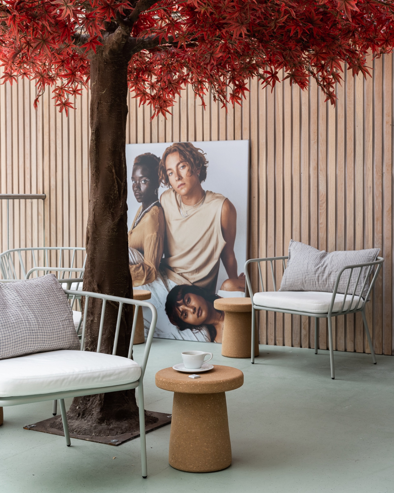
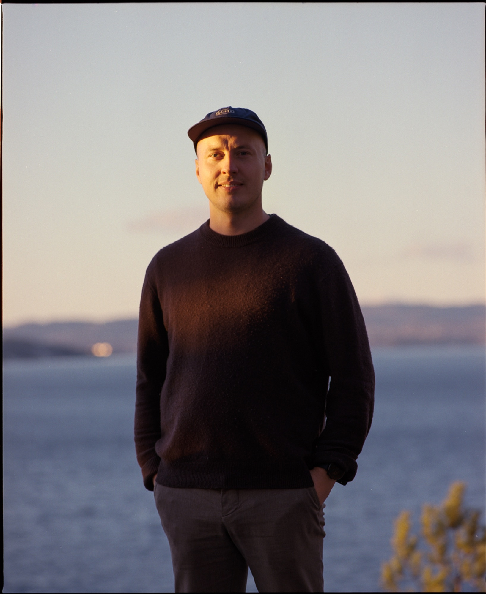
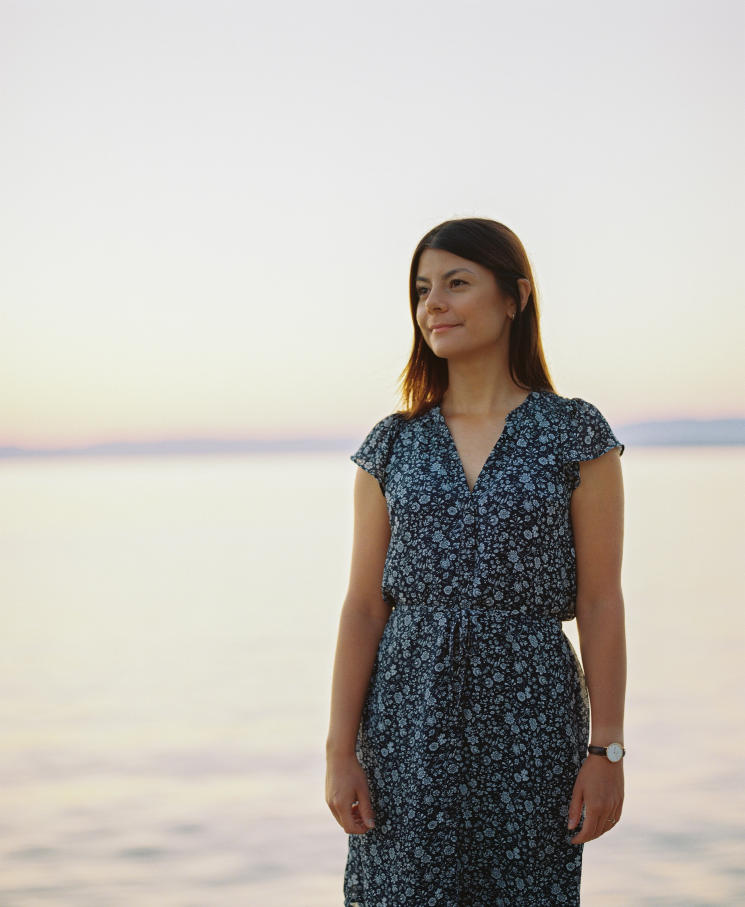
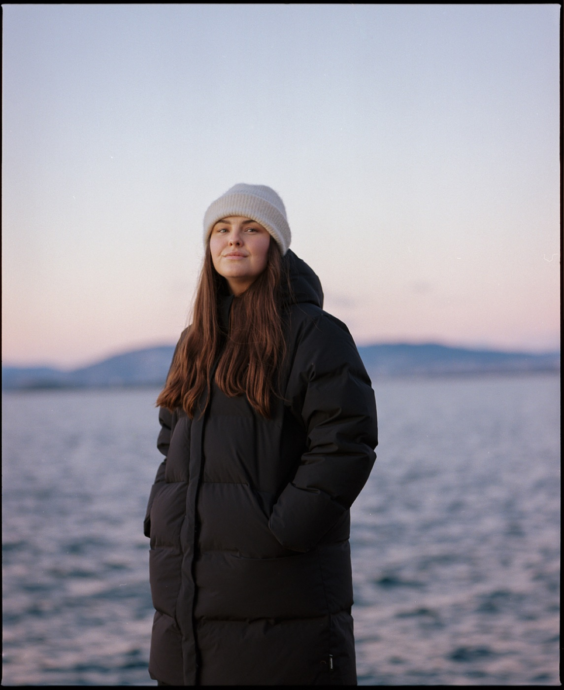
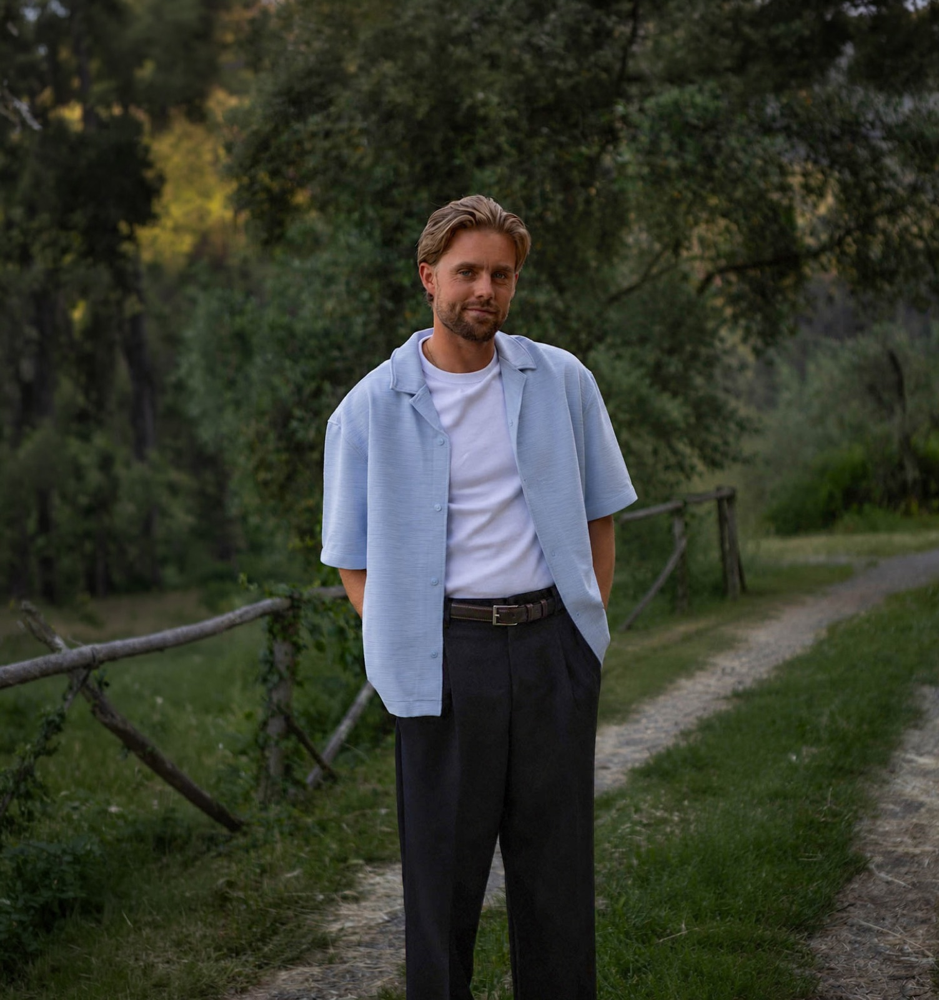

Fotostallen er en gruppe fotografer i Oslo, et kollektiv som samarbeider. Vi hjelper hverandre, tar alt mulig rart av foto og har det gøy sammen.
Fotostallen er en gruppe fotografer i Oslo. Alle tar både bilder og film, men vi har hvert vårt felt: noen fotograferer boliger hver uke, andre jobber mest med interiørarkitekter og merkevarer.
Vi deler oppdrag og erfaring, så du får den fotografen som passer best til jobben, enten det er en leilighet på Torshov eller en reklamefilm på fjellet.






Vi er åtte, og alle tar både bilder og film. Rull videre for å bli kjent med hver av oss og se bilder vi er glade i.
Rull →